Denzel R. Brown's Coding Challenges
Challenge 1:
My approach:
I approached this challenge, first, by extracting the values from the string input. After looking at simpler
code, I feel as if I took a round-about way of solving it. After said values are extracted, we are then able
to compare the values on a time scale ranging from 0-100 in both the hour and minute scopes. Below,
you'll see, are the 3 stages I went through to successfully complete Challenge 1.
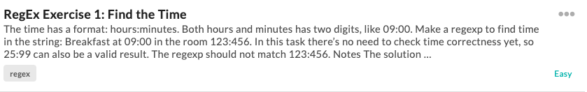
 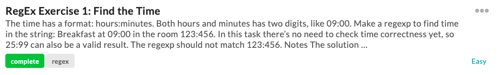
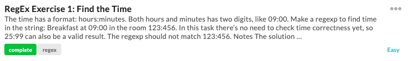
Challenge 2:
My approach:
I approached this challenge by simply creating an algorithm based off sample data. This challenge was amongst
the easiest ones I've completed and honestly should be in the very easy section. Below, you'll see,
are the 3 stages I went through to successfully complete Challenge 2.
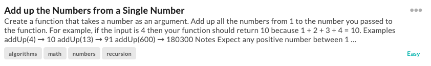
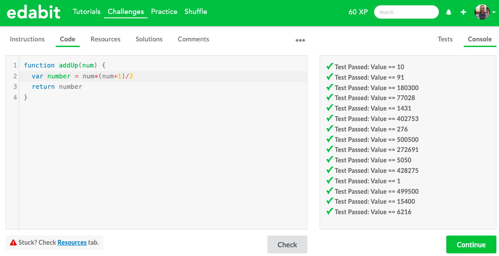
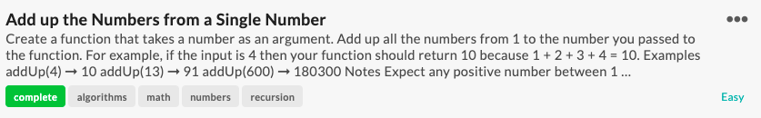
Challenge 3:
My approach:
I approached this challenge, first, by telling my function how to sort the array, because when you sort an
array with .sort(), it assumes that you're attempting to sort strings. Also, when attempting to sort
the numbers, they were not sorted correctly, per the default behavior. My function took in two parameters,
a and b, that represented any two elements from the array and based how they were sorted on my
function's return value. Below, you'll see, are the 3 stages I went through to successfully complete
Challenge 3.
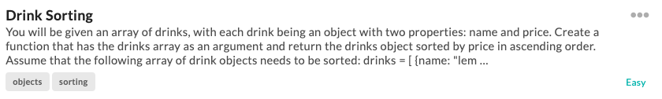
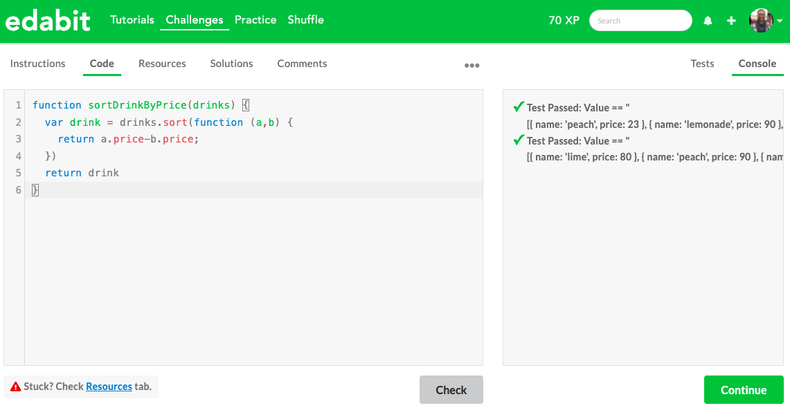
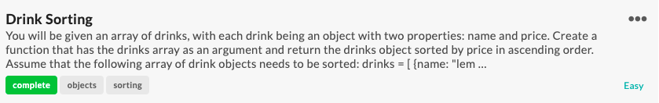
Challenge 4:
My approach:
I approached this challenge simply by calling for the month and date with the .getMonth and .getDate functions, respectively. After that I set up a conditional statement that spit out a true or false based off of wether or not the date in question was Christmas Eve. This challenge was also pretty straightforward and probably should belong in the very easy section. Below, you'll see, are
the 3 stages I went through to successfully complete Challenge 3.
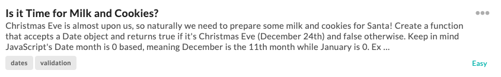
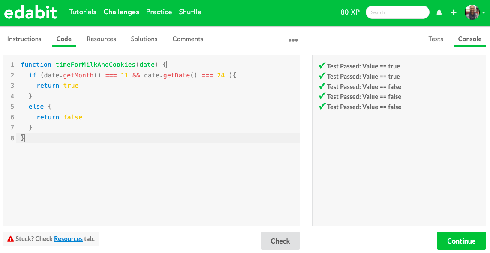